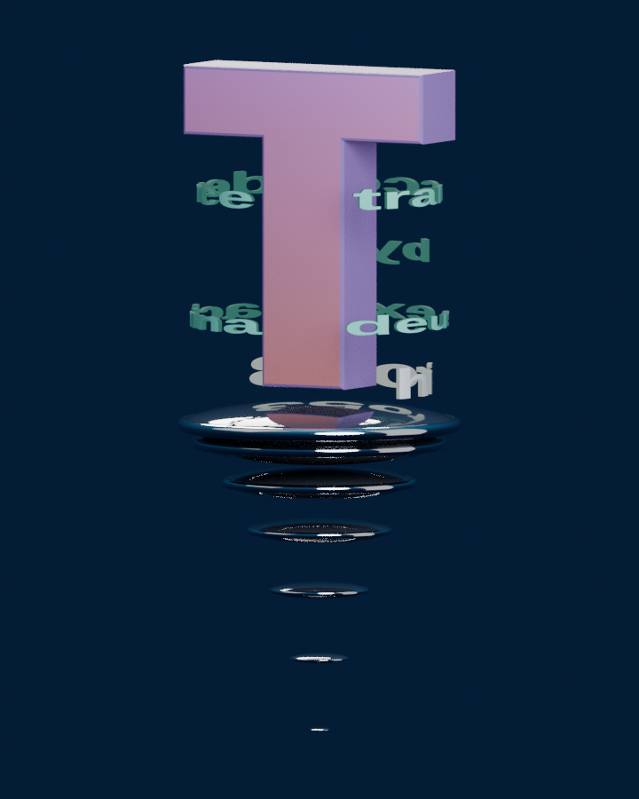

h!ro53 / OBJECT · SPATIAL TEST 02
空間に置いて、見回す
文字の表示と運動を修正した、visionOS 26.0.1向けの試作です。文字環の回転と円盤の下降を見た後、静止版で正面・背面の文字を確認してください。修正版は実機での再確認待ちです。

立体モデルを読み込んでいます。
実寸を確認するには「空間で見る」を選ぶか、USDZを保存してVision Proの「ファイル」から開いてください。ページ内の表示は枠に合う大きさです。静止版は高さ80 cm、材質サンプルは同じ縮尺で約46 cm、運動版も同じ縮尺です。配置・回転・拡縮はOSの操作を使います。
文字は元の画像の輪郭を面にし、文字以外の筒状面をなくしました。Tの色も画像に焼き直しています。文字の向きと穴、裏面、円盤の明るさを確かめてください。照明と反射は元のWeb作品と異なり、ページ内とQuick Lookでも変わります。画像はデスクトップの参考描画です。
運動版は691.2秒で反復します。円盤の2.4秒周期を保ち、継ぎ目がつながるよう文字回転とTの浮遊を0.0072%だけ遅くしています。ページでは自動再生と反復を設定していますが、Quick Lookの再生・反復は実機での再確認が必要です。
元の作品は引き続きObjectで鑑賞できます。